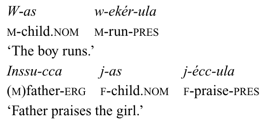
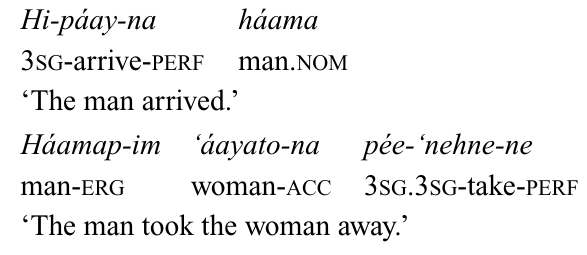
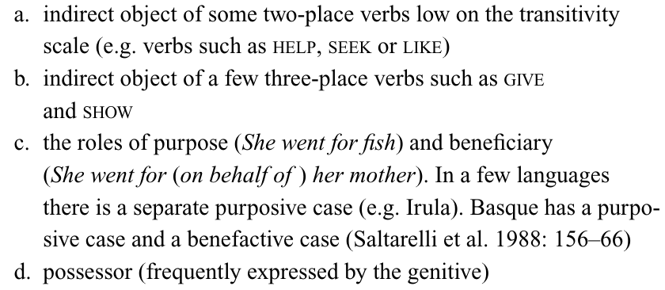
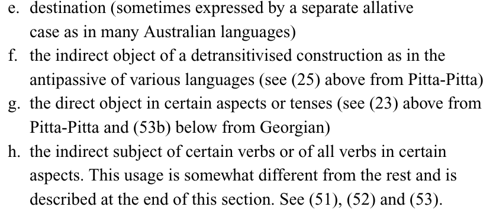
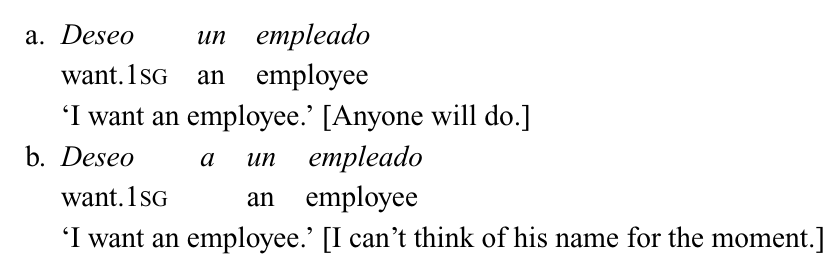

Kasus Typologie
20.12.2019
Was bedeutet Kasus?
- Der Kasus markiert die Funktion des Nomens im Satz.
- Normalerweise gilt (im Deutschen):
- Subjekt = Nominativ
- Direktes Objekt = Akkusativ
- Indirektes Objekt = Dativ
Der Mann hat dem Chef einen Brief geschickt.
Kasus
- Es gibt aber Ausnahme.
- z.B.:
Mir ist heiß.
→ Subjekt ist im Dativ.
Ich haben den ganzen Tag gewartet.
→ den ganzen Tag ist kein Argument.
Alignment
Nominativ–Akkusativ
-
- Min
- I.nom
-
- kel-li-m
- come-past-1sS
'I came.'
-
- min
- I.nom
-
- oloppoh-u
- chair.acc
-
- aldjat-ty-m
- break-past-1sS
'I broke the chair.'
Ergativ–Absolutiv
Ergativ–Absolutiv
-
- Maria-nin-ra
- Maria-erg-prt
-
- ochiti
- dog
-
- noko-ke
- find-perf
'Maria found the dog.'
-
- Maria-ra
- Maria-prt
-
- ka-ke
- go-perf
'Maria went.'
Avar
- Im Avar wird das A-Argument mit -cca markiert.
- Die S und P Argumente sind unmarkiert.
Tripartite
Nez Perce
Aktivsystem
- In Aktivsystem hängt Kasusmarkierung auf die Bedeutung von Verben ab.
- Manche intransitive Verben werden unmarkiert, manche markiert, z.B. Laz.
Dativ
Dativ
Genitiv
- Oft wird für Possessiv benutzt.
- Manchmal wird es benutzt für das A-Argument.
- z.B. Yupik Eskimo
Partitiv
- Für 'partly-affected' Objekts.
- z.B. Ungarisch.

Hiearchien
- In vielen Fälle ist der Kasussystem mehr Kompliziert.
- Im Besonderen sehen wir viele Einwirkungen mit bekannte Hiearchien.
DOM
Differential Object Marking
- Pitjantjatjara (Aissen 2003)
-
- Tjittji-ngku
- child-erg
-
- Billy-nya
- Billy-acc
-
- nya-ngu
- see-past
'The child saw Billy'
-
- Billy-lu
- Billy-erg
-
- titji
- child
-
- nya-ngu
- see-past
'Billy saw the child.'
- Nur Eigennamen und Pronomen werden markiert.
DOM im Türkischen
Differential Object Marking
- DOM unterschiedet sich von Sprache zu Sprache.
- Der größte Faktoren sind 'Animacy' und 'Definiteness'.
Animacy Scale
Human > Animate > Definite
Definiteness Scale
Pronoun > Proper Name > Definite
NP > Indefinite Specific NP > Non-specific NP
Spanischen
- Nur Markierung für spezifisch, lebende Objekts.
Personhierarchie
- 1>2>3
- Im Rembarrnga es gibt Objektkasus nur wenn das Person des Objekts höher als das Person des Subjekts ist.
Fore
- Pronoun/personal name/kin term > human > animate > inanimate
- Das Objeckt wird markiert, nur wenn das Subjekt niedere an der Skala ist.